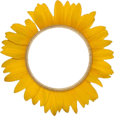

"LET’S HUSTLE HARD TILL WE SHINE LIKE SUNFLOWERS"
It’s not gonna be easy, pasti banyak luka yang ga keliatan juga inside.
But hey, please keep fighting. Jangan nyerah before you see the final result,
Let’s meet that beautiful destiny Tuhan udah siapin buat lo 💫 진짜 기다려.
But hey, please keep fighting. Jangan nyerah before you see the final result,
Let’s meet that beautiful destiny Tuhan udah siapin buat lo 💫 진짜 기다려.
SUNFLOWER GARDEN TRACKER
Review Materi
WEEKLY EXAM
⏱ 60:00